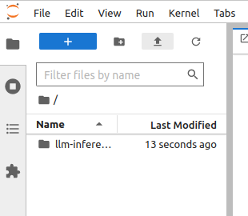
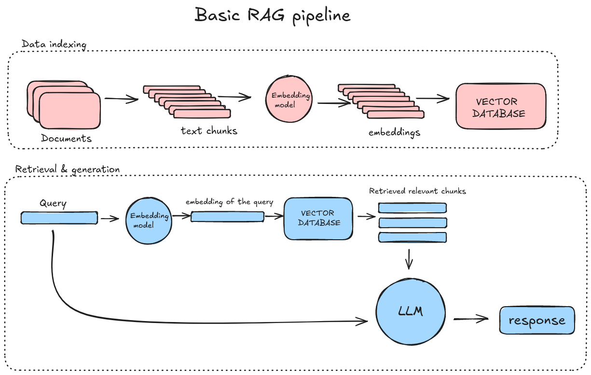

4. Usecases of LLMs#
While building your own LLM from scratch can be complex and resource-intensive, many high-quality models are available to the public. By leveraging these models, researchers, developers, and businesses can harness advanced language capabilities without the complexity of training their own models.
Before using an LLM, it’s essential to clearly define your goal — whether it’s debugging code, classifying text, or summarizing documents. There are multiple ways to access and use these models:
Open-source models (e.g., on Hugging Face) allow full customization and deployment in any environment.
Paid API-based services provide access to cutting-edge models without infrastructure setup.
User-friendly interfaces enable quick experimentation without coding.
Since we have familiarised ourselves with Aitta by now, we will continue using it in our coding exercises.
Once you’ve chosen a model, the next step is to experiment with it. Experimenting with prompting an LLM in different ways is a good way to understand its capabilities and whether it can perform the desired tasks to a satisfactory level. Many models are released with model cards, which are a great resource for accessing and understanding the details of specific models. With some iteration, it is possible to produce specific inputs or prompts that give helpful outputs. For example, a researcher might ask a model to summarise a longer document or translate text into another language.
Prompt engineering & optimization#
Prompt engineering involves designing structured inputs that guide an LLM toward producing more accurate, relevant, and useful responses. Since LLMs generate text based on probability rather than true understanding, the way a prompt is phrased significantly affects the output.
A well-structured prompt helps:
Improve response accuracy
Reduce hallucinations (false or misleading information)
Control the style, tone, and format of the output
Examples of effective prompting
Prompting technique |
Bad example |
Improved example |
|---|---|---|
Be specific |
“Summarize this.” |
“Summarize this article in 3 bullet points with key findings.” |
Provide context |
“Explain deep learning.” |
“Explain deep learning as if I’m a biology researcher new to AI.” |
Define output format |
“List key insights.” |
“List 3 key insights in markdown bullet format.” |
Use role-based prompts |
“Write a research summary.” |
“You are a research assistant. Summarize this paper for a PhD audience.” |
Beyond these basic techniques lie more sophisticated approaches: There are advanced prompting strategies like few-shot prompting or chain-of-thought prompting. You are free to search for more information about these advanced techniques if you like. One option is Prompt Engineering Guide, made by DAIR.AI.
Real life usecase#
LLMs are widely used across industries, enabling powerful automation and augmentation of tasks. Here are some real-world applications:
Academic research: Use LLMs to summarize papers, extract key insights, and even generate literature reviews.
Healthcare: Process large volumes of medical texts to extract relevant findings for practitioners.
Customer support: Automate answering customer inquiries using chatbots with natural responses.
Coding assistance: Debug and explain code snippets, speeding up software development.
Exercise time!#
Coding exercises are available through CSC’s Noppe service.
It is possible to Upload files to an active session using the icon shown in the picture below.

Exercise 4: Prompt testing#
Choose your preferred model and compare responses using different kind of prompts
Choose a chat-tuned model and use it to test prompts 04_prompt-testing.ipynb
Exercise 5: Real usecases for chat-tuned models#
Explore few short examples of real-life usecases for LLMs 05_usecases_Poro-70B-instruct.ipynb
Exercise 6: Simple example for multiple abstract summarization#
Lets use
allenai/OLMo-7B-0724-Instructmodel for summarizing multiple abstracts 06_summarizate-abstracts.ipynb
Challenges in LLM inference#
LLMs may generate false or misleading information while sounding confident. This is called hallucination. This happens because they predict text based on probable next words (in the context of previous words) rather than a factual understanding of the world. LLMs typically can reproduce knowledge contained in their original training data with some accuracy but do not have access to live or up-to-date information unless connected to external sources.
There are several techniques to mitigate these problems. As already mentioned, prompt engineering and fine-tuning can help improve response accuracy by providing a more accurate context for the model when it interprets inputs. A more advanced approach, RAG (Retrieval-Augmented Generation), allows LLMs to pull relevant, real-time information from external knowledge bases, reducing hallucinations and improving factual accuracy.
RAG applications#
RAG systems combine the power of information retrieval and language generation. They first search through a collection of documents to find the most relevant ones to a given query, and then use a language model to generate accurate and contextually relevant responses based on the retrieved information. This approach enhances the model’s ability to provide more precise answers by grounding the generation in external data.
Aitta enables these uses for a number of models and can be used to build a RAG system using e.g. the langchain library. One concrete example of RAG application integrated with Aitta can be found here: simple_chatbot.
Below is an illustration of the data flow in RAG applications. The diagram highlights the steps involved in data indexing, retrieval, and generation. In the upcoming notebook exercises, we will take a closer look at each of these steps in detail.
EXTRA EXERCISES:#
Exercise 7: Basics of RAG#
Explore all the steps required to build RAG assisted LLM: 07_rag_basics.ipynb
Exercise 8: Simple RAG example using FAISS#
Let’s explore RAG with a FAISS index: 08_simpleRAG-using-FAISS.ipynb
We would appreciate your feedback!#
Please take a moment to complete feedback survey. Your insights help us improve our course material and exercises.
Now you have completed this concise course! 👏
Thank you 😊